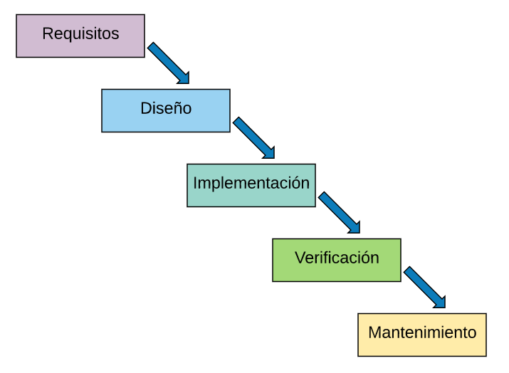
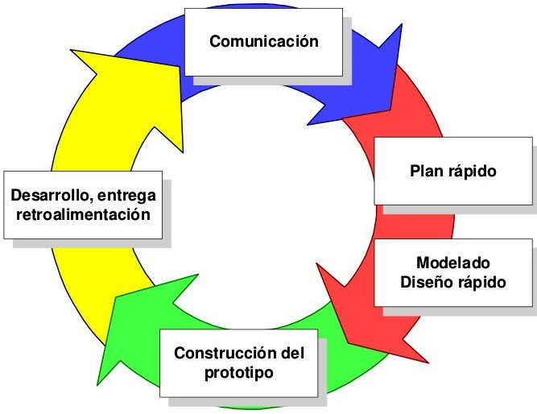
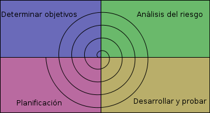
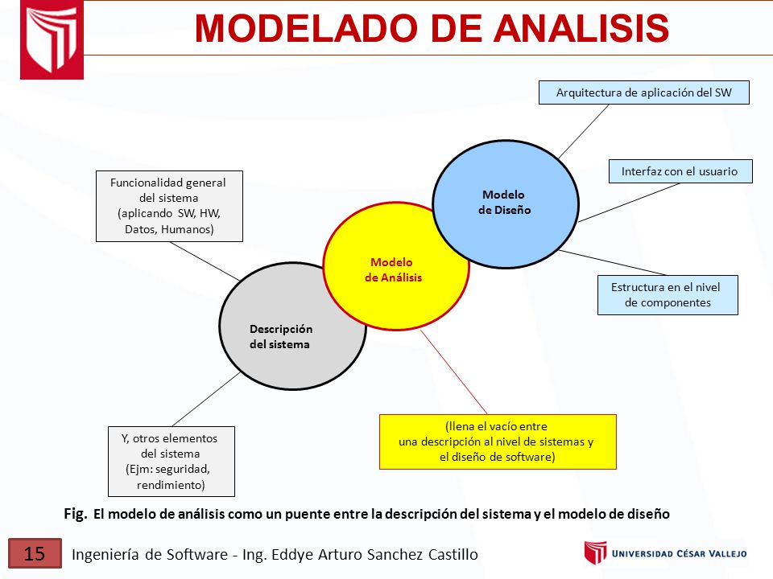

Modelos de desarrollo de software
Una parte importante de la ingeniería de software es el desarrollo de metodologías y modelos. En la actualidad ha habido muchos esfuerzos que se han encaminado al estudio de los métodos y técnicas para lograr una aplicación más eficiente de las metodologías y lograr sistemas más eficientes y de mayor calidad con la documentación necesaria en perfecto orden y en el tiempo requerido.
Un modelo para el desarrollo de software es una representación abstracta de un proceso. Cada modelo representa un proceso desde una perspectiva particular y así proporcione información parcial sobre el proceso. Éstos modelos generales no son descripciones definitivas de los procesos del software más bien son abstracciones de los procesos que se pueden utilizar para el desarrollo del software. Puede pensarse en ellos como marcos de trabajo del proceso y que pueden ser adaptados para crear procesos más específicos.
Modelo clásico o de cascada
El modelo en cascada es un proceso de desarrollo secuencial, en el que el desarrollo de software se concibe como un conjunto de etapas que se ejecutan una tras otra. Se le denomina así por las posiciones que ocupan las diferentes fases que componen el proyecto, colocadas una encima de otra, y siguiendo un flujo de ejecución de arriba hacia abajo, como una cascada.

El modelo de desarrollo en cascada se originó en la industria y la construcción, donde los cambios a posteriori son caros y difíciles de implementar. Cuando estás creando un producto material, realizar cambios en lo ya construido es mucho más difícil que en un programa informático. En el mundo del software, todavía no se habían implantado otras metodologías de desarrollo por lo que se adaptó el modelo en cascada que se utilizaba en otros sectores.
Modelo de prototipos
El modelo de prototipos permite que todo el sistema, o algunos de sus partes, se construyan rápidamente para comprender con facilidad y aclarar ciertos aspectos en los que se aseguren que el desarrollador, el usuario, el cliente estén de acuerdo en lo que se necesita así como también la solución que se propone para dicha necesidad y de esta forma minimizar el riesgo y la incertidumbre en el desarrollo, este modelo se encarga del desarrollo de diseños para que estos sean analizados y prescindir de ellos a medida que se adhieran nuevas especificaciones, es ideal para medir el alcance del producto, pero no se asegura su uso real. Este modelo principalmente se lo aplica cuando un cliente define un conjunto de objetivos generales para el software a desarrollarse sin delimitar detalladamente los requisitos de entrada procesamiento y salida, es decir cuando el responsable no está seguro de la eficacia de un algoritmo, de la adaptabilidad del sistema o de la forma en que interactúa el hombre y la máquina. Este modelo se encarga principalmente de ayudar al ingeniero de sistemas y al cliente a entender de mejor manera cuál será el resultado de la construcción cuando los requisitos estén satisfechos.

Modelo de espiral
El modelo evolutivo espiral tiene en cuenta fuertemente el riesgo que aparece a la hora de desarrollar software. Para ello, se comienza mirando las posibles alternativas de desarrollo, se opta por la de riesgo más asumible y se hace un ciclo de la espiral. Si el cliente quiere seguir haciendo mejoras en el software, se vuelve a evaluar las distintas nuevas alternativas y riesgos y se realiza otra vuelta de la espiral, así hasta que llegue un momento en el que el producto software desarrollado sea aceptado y no necesite seguir mejorándose con otro nuevo ciclo. En el modelo espiral, el software se desarrolla en una serie de versiones incrementales. Durante las primeras iteraciones la versión incremental podría ser un modelo en papel o un prototipo, durante las últimas iteraciones se producen versiones cada vez más completas del sistema diseñado. EL modelo en espiral se divide en un número de actividades de marco de trabajo, también llamadas REGIONES DE TAREAS , Cada una de las regiones están compuestas por un conjunto de tareas del trabajo llamado CONJUNTO DE TAREAS que se adaptan a las características del proyecto que va a emprenderse en todos los casos se aplican actividades de protección.

Modelo de la estructura del sistema
Es la primera representación técnica de un sistema. Utiliza una mezcla de formatos en texto y diagramas para representar los requisitos del software, las funciones y el comportamiento. De esta manera se hace mucho más fácil de comprender dicha representación, ya que es posible examinar los requisitos desde diferentes puntos de vista aumentando la probabilidad de encontrar errores, de que surjan debilidades y de que se descubran descuidos.Le proporciona al diseñador de software una representación de datos, función y comportamiento que puede trasladar a diseños arquitectónicos de interfaz. Este, junto al modelo de análisis, ofrece al desarrollador y al cliente los medios para evaluar la calidad una vez construido el software.
